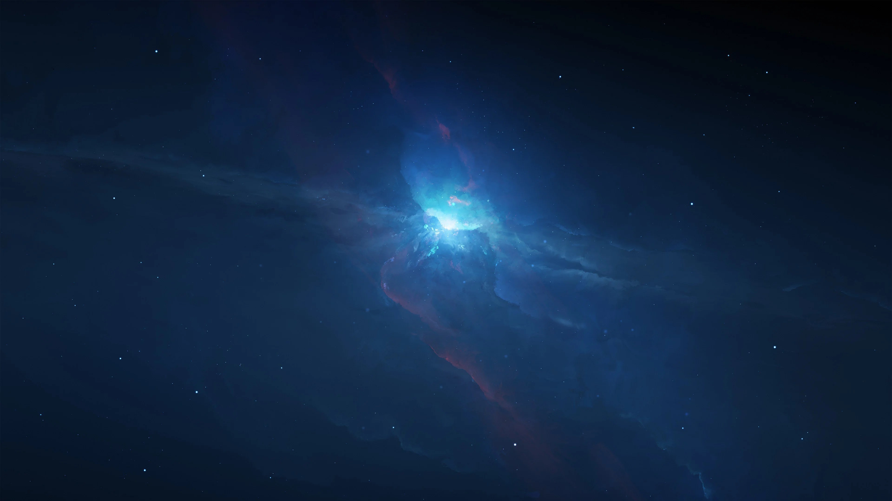

Dincolo de atmosfera terestră se intinde o lume diferită și plină de mister, numită cosmos


| Spațiul Cosmic este enorm și numărul de fenomene neobișnuite pe care le poți întâlni aici este extraordinar de mare. Tehnologiile noastre se tot dezvoltă și datorită acestui fapt oamenii de știință pot progresa și descoperi încă mai multe adevăruri despre Univers și, de asemenea, pot reînnoi teoriile vechi. Încă mai uimitor este faptul că până și azi, cel mai misterios și complex obiect din Univers se află chiar aici, pe planeta Pământ, cu mult mai aproape decât v-ați fi putut închipui. |
|
|
|
|
Terra, casa noastra, este doar un corp ceresc de mici dimensiuni care se roteste la nesfarsit in jurul unei stele la fel de neinsemnate la scara cosmica, Soarele. Pe langa miscarea de revolutie Pamantul mai executa o miscare de rotatie in jurul unei axe ce trece prin centrul lui. Are si un satelit natural, Luna. | |